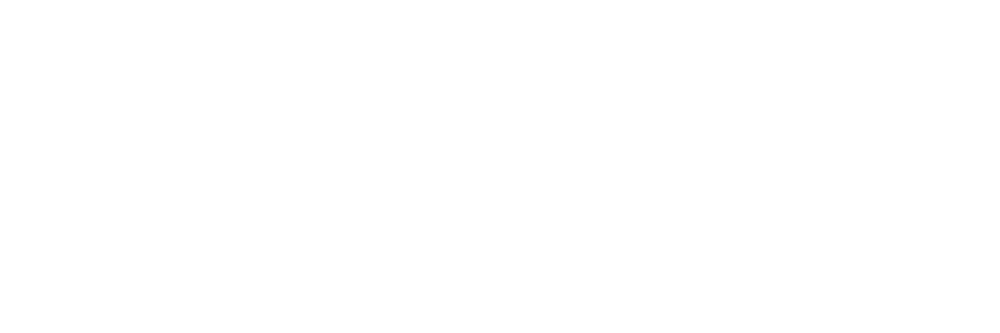
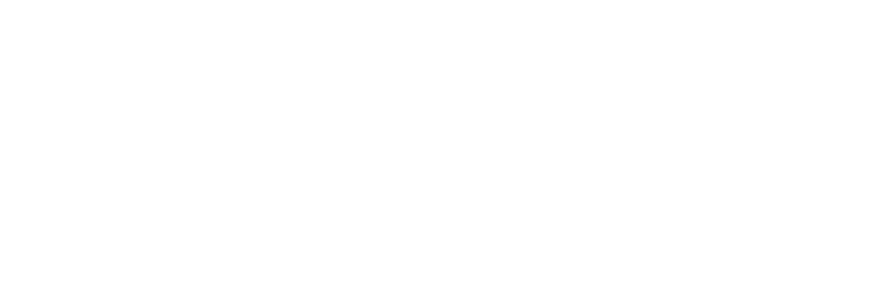
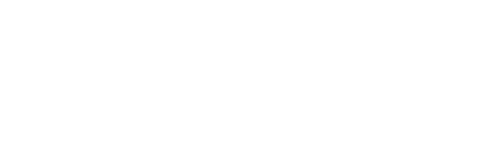
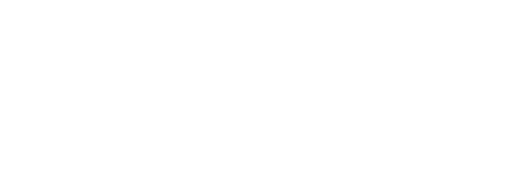
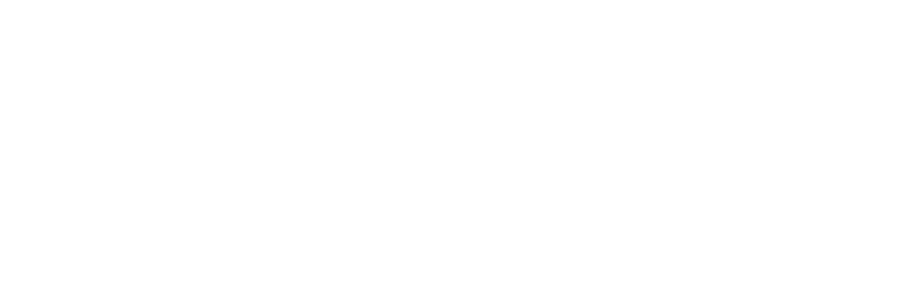
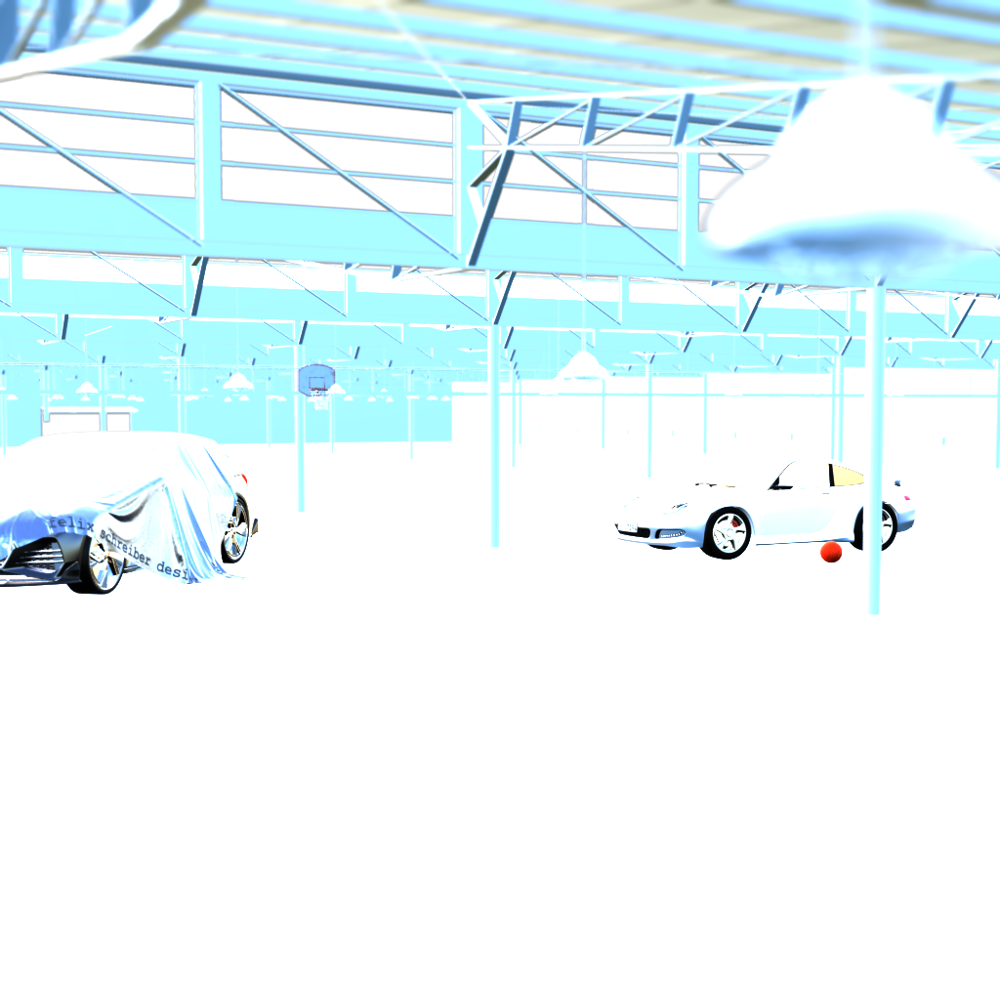
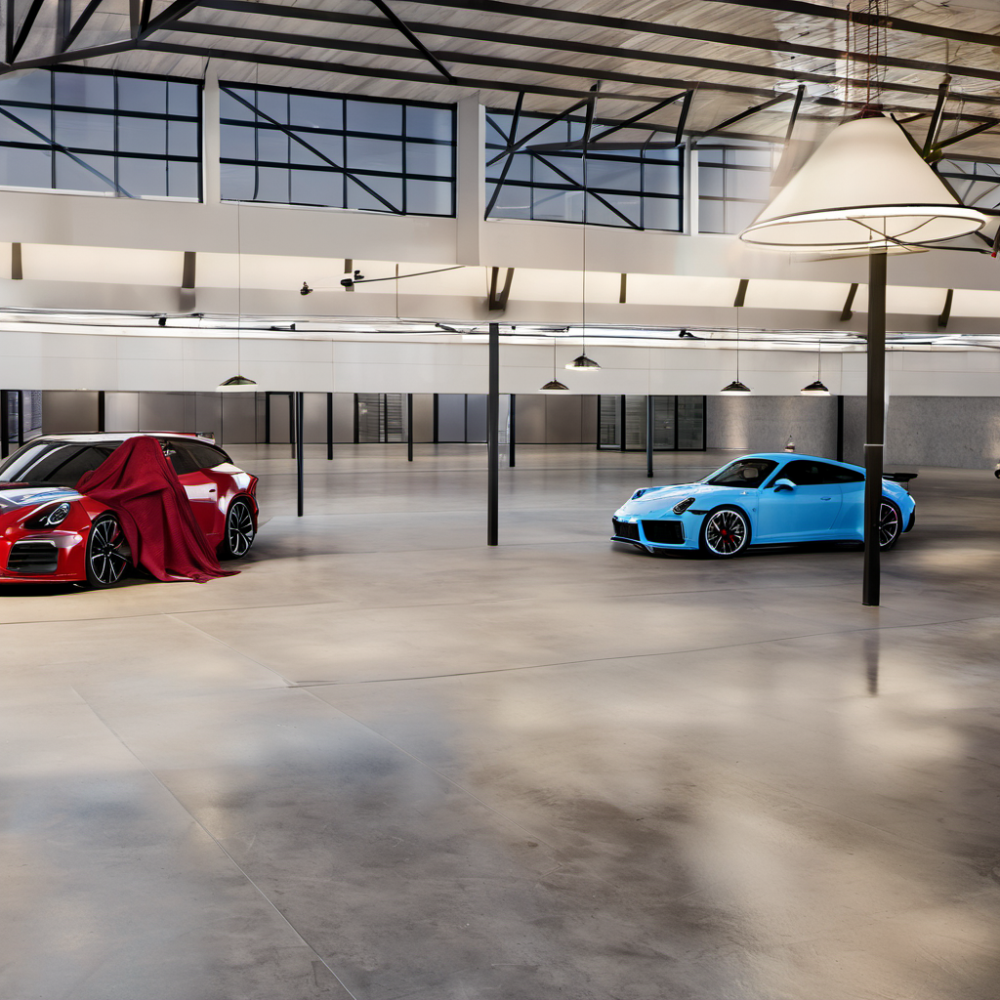
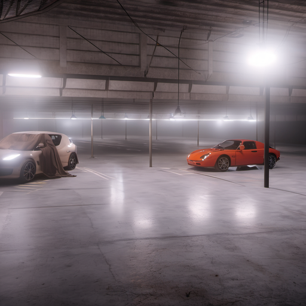
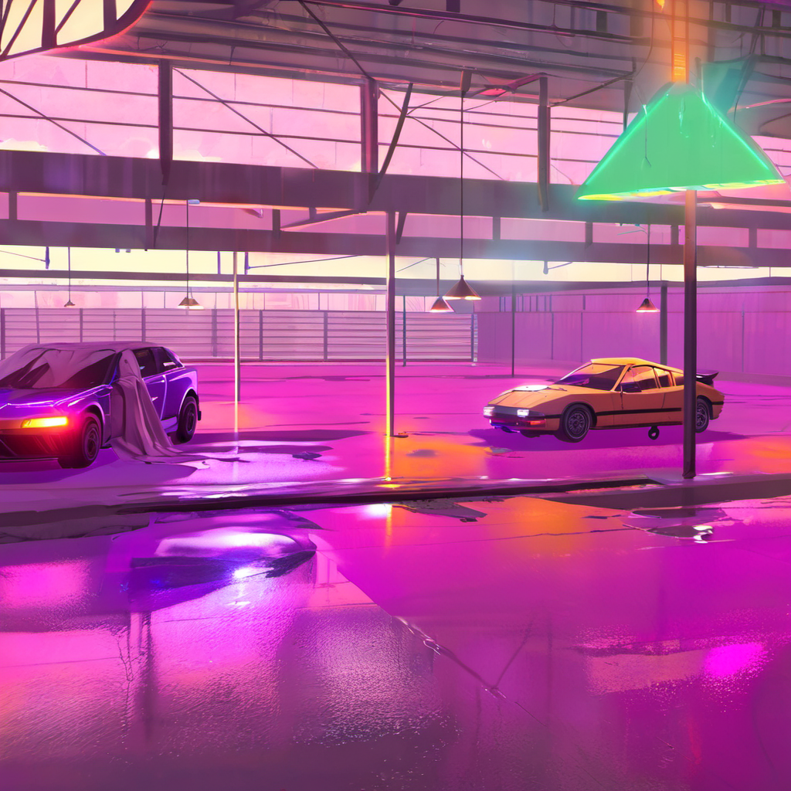

HALLE 2 — Layer Decomposition
Isolated Collection Masks
Each collection rendered in isolation (EEVEE, film_transparent) — real alpha cutouts. Colored masks show exactly where each layer contributes geometry in 3D space. Toggle multiple layers to see spatial relationships.








Layer Masks (α-isolated, EEVEE 32 spp)
Halle
Porsche 911
Audi RS6
Decke
B-Ball
Hoop
Toggle layers to see spatial depth overlap. The Decke (amber) sits above the Porsche (red) — both are inside the Halle (cyan).
Analysis Passes
108
Objects
98
Meshes
11
Collections
101
Materials
54mm
Camera
3:1
Aspect
SDXL + ControlNet Depth
3 Editorial Scenes
Full scene depth map → ControlNet Depth SDXL (strength 0.85, dpmpp_2m+karras, CFG 7.0, 20 steps). Same 3D space, three atmospheres.



Pipeline
How it Works
Blender 5.1 (EEVEE, 32 spp) → per-collection α-beauty + film_transparent → EXR
└─ System Python (OpenEXR+Pillow) → RGBA PNG with embedded alpha
└─ Python (Pillow) → colorized mask overlays (60% opacity)
Blender 5.1 (Cycles) → full-scene depth 1024×1024 → square-padded
ComfyUI (localhost:8188) → ControlNet Depth SDXL → 3 scenes (~2.8 min each)